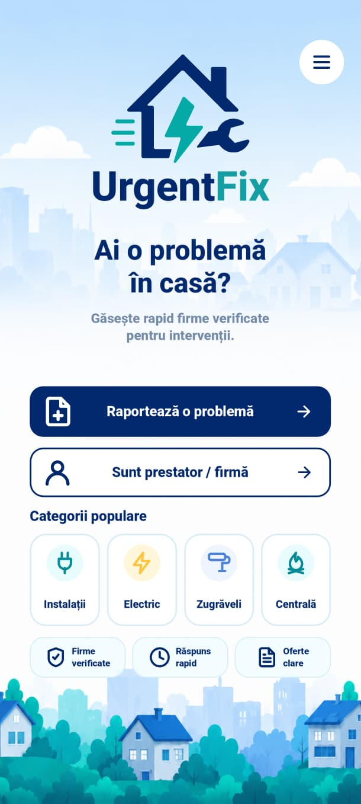
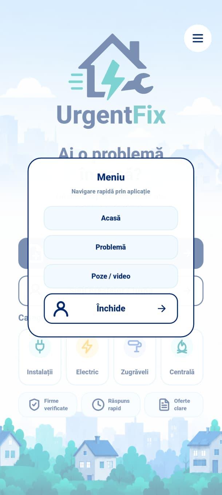
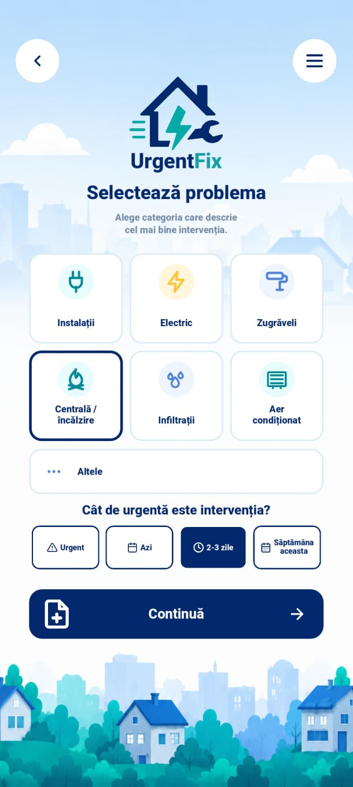

Escrow securizat
Plata este ținută în siguranță până când lucrarea este finalizată și confirmată.
UrgentFix — Rezumat scurt
Postezi problema cu poze sau video, alegi nivelul de urgență și primești oferte în timp real din apropiere.
Prezentarea aplicației
Aplicația UrgentFix arată exact felul în care vrei să comunici urgentul: simplu, intuitiv și optimizat pentru mobil.



UrgentFix este o platformă care transformă problemele casnice urgente într-un serviciu digital rapid și sigur. Utilizatorii trimit o solicitare cu poze sau video, iar meseriașii locali primesc notificări și trimit oferte direct în aplicație.
Plata este ținută în siguranță până când lucrarea este finalizată și confirmată.
Toate tarifele și comisioanele sunt clare încă din momentul ofertării.
Meseriașii sunt evaluați și verificați pentru a preveni abuzurile.
Documentele fiscale sunt încărcate în aplicație pentru transparență și prevenirea fraudelor.
Încarci poze sau video și selectezi nivelul de urgență.
Profesioniștii din apropiere sunt notificați instant și pot trimite oferte.
Compari prețurile și feedback-ul, apoi confirmi serviciul.
Banii sunt blocați până la finalizarea lucrării și primirea bonului/facturii.
Urgențele casnice se rezolvă rapid când densitatea locală este mare. De aceea, planul nostru începe cu lansare locală în Baia Mare, unde construim o comunitate puternică de utilizatori și meseriași.
Concentrare pe Baia Mare pentru validare și livrare rapidă a primelor servicii.
Câștigăm încredere și acoperire prin rapeluri rapide și performanță ridicată.
Odată dovedit modelul local, mărim aria națională și pregătim extinderea regională.
Pe termen lung, UrgentFix poate evolua într-o infrastructură digitală completă pentru servicii casnice și renovări.